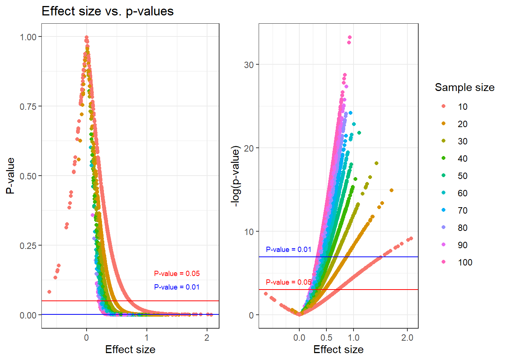
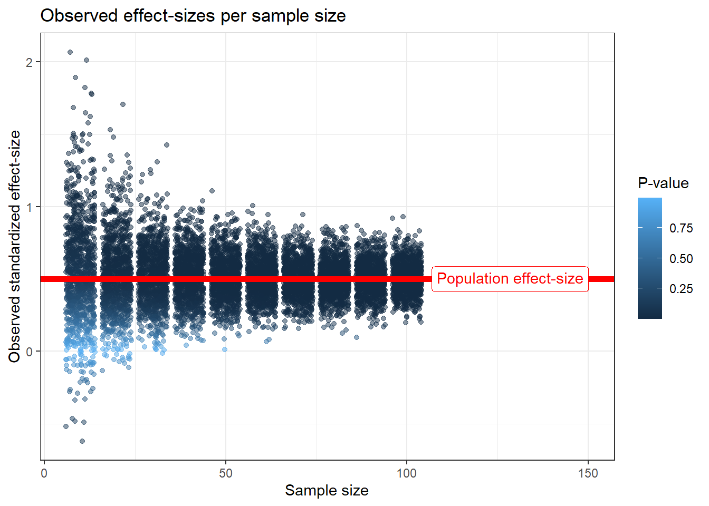
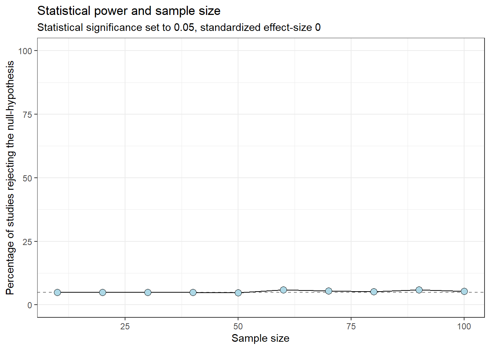
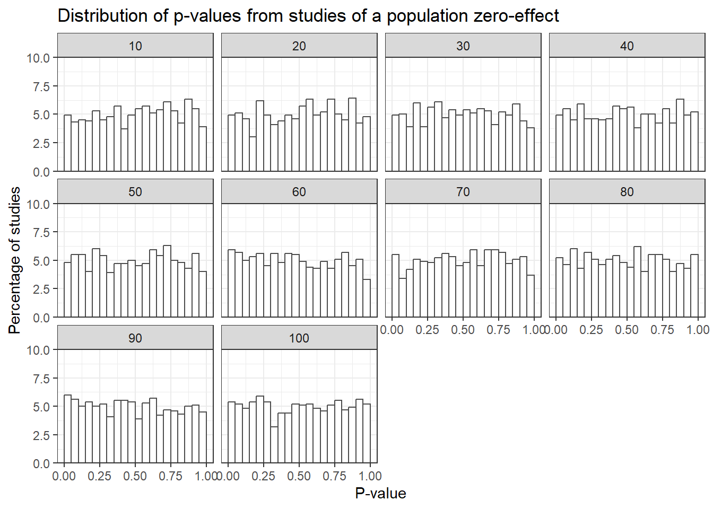

Statistical power is the long-run ability of a study design to detect a true effect.
In frequentist statistics, the true effect is fixed and we want to use a sample to estimate it.
Since we do not know the true effect, the goal of a power analysis is to reach sufficient power for an assumed effect (Lakens 2022).
This assumption can be based on a hypothesis of a true effect, or
An effect that is considered clinically meaningful
A simulation experiment
We now will build a simulation study to investigate
How often will we find a “true” population effect in studies of different sizes?
What is the relationship between effect size, power and statistical significance?
What is the effect of sample size on the precision of estimates (confidence intervals)
Our simulation will investigate a known population effect of 0.5. This standardized effect (\(d\)) is in the one-sample case \(d = \frac{mean}{SD}\).
Code
library(tidyverse)set.seed(1)# Create a population to sample from with a known effect# In standardized terms, the population effect is 0.5 = mean / sd.population <-rnorm(10^6, 5, 10) # Calculate the population effect size pop.es <-mean(population) /sd(population)results_total <-list()# 0. Inside for-loop:for(i in1:1000) {# 1. Sample from the population with sample size 10 to 100# 1.1 create a vector of sample sizes sample.sizes <-seq(from =10, to =100, by =10)# 1.2 create a list to store results results_sub <-list()# 1.3 Inside a nested for-loop, perform sampling with each sample sizefor(j in1:length(sample.sizes)) { samp <-sample(population, sample.sizes[j], replace =FALSE)# 2. Create a model m <-lm(y ~1, data =data.frame(y = samp))# 2.1 Store results from each model as a data frame in a list: results_sub[[j]] <-data.frame(mean =coef(summary(m))[1, 1], # Estimated meanse =coef(summary(m))[1, 2], # Standard errorpval =coef(summary(m))[1, 4], # p-valueci.lwr =confint(m)[1], # confidence interval ci.upr =confint(m)[2], # confidence intervaleffect.size =mean(samp) /sd(samp),sample.size = sample.sizes[j]) # Sample size }# 2.2 Combine all data frames from each sample size as a data frame in a list results_total[[i]] <-bind_rows(results_sub)# 3. Repeat 1 and 2 1000 times, performing 1000 studies each with # sample sizes 10 to 100.}# Combine all resultsresults_total <-bind_rows(results_total)
What is the relationship between sample size and finding a true effect?
As the sample size increases, we are more likely to have a study that detects a true effect
We simply count the proportion of “studies” that declear a statistically significant effect at \(p<0.05\)
Code
# Count numbers of studies with p < 0.05results_total %>%filter(pval <0.05) %>%group_by(sample.size) %>%summarise(n =n(), prop = n /1000) %>%ggplot(aes(sample.size, 100* prop)) +geom_line() +geom_point(shape =21, fill ="lightblue", size =3) +labs(x ="Sample size", y ="Percentage of studies rejecting the null-hypothesis", title ="Statistical power and sample size", subtitle ="Statistical significance set to 0.05, standardized effect-size 0.5") +theme_bw()
The relationship between power and sample size can be used to make cost-benefit analyses of future studies.
The “cost” of a study can be regarded as e.g. economical or ethical.
In most cases the power calculation can be done without simulations, using e.g. the pwr package.
Code
library(pwr)sample.sizes <-seq(from =10, to =100, by =10)results.pwr <-list()for(i in1:length(sample.sizes)) { pwr_analysis <-pwr.t.test(type ="one.sample", d =5/10, sig.level =0.05, n = sample.sizes[i]) results.pwr[[i]] <-data.frame(sample.size = sample.sizes[i], prop = pwr_analysis$power) }results.pwr <-bind_rows(results.pwr)# Count numbers of studies with p < 0.05results_total %>%filter(pval <0.05) %>%group_by(sample.size) %>%summarise(n =n(), prop = n /1000) %>%ggplot(aes(sample.size, 100* prop)) +geom_line() +geom_point(shape =21, fill ="lightblue", size =3) +geom_line(data = results.pwr, color ="red") +labs(x ="Sample size", y ="Percentage of studies rejecting the null-hypothesis", title ="Statistical power and sample size", subtitle ="Statistical significance set to 0.05, standardized effect-size 0.5.") +theme_bw()
Power analysis using simulations (blue circles) and analytically (red line)
Effect size and statistical significance
A standardized (observed) effect size may be calculated from each study. What is the relationship between effect-sizes, sample sizes and p-values?
The p-value is directly related to the observed effect-size. The sample size determines the p-value at a specific effect-size.
Code
library(cowplot)plotA <- results_total %>%ggplot(aes(effect.size, pval, color =as.factor(sample.size))) +geom_point() +labs(color ="Sample size") +geom_hline(yintercept =0.05, color ="red") +annotate("text", x =1.5, y =0.05+0.1, color ="red",label ="P-value = 0.05", size =2.5) +geom_hline(yintercept =0.001, color ="blue") +annotate("text", x =1.5, y =0.001+0.1, color ="blue",label ="P-value = 0.01", size =2.5) +labs(title ="Effect size vs. p-values", x ="Effect size", y ="P-value") +theme_bw() +theme(legend.position ="none")plotB <- results_total %>%ggplot(aes(effect.size, -log(pval), color =as.factor(sample.size))) +geom_point() +labs(color ="Sample size", title =" ", x ="Effect size", y ="-log(p-value)") +geom_hline(yintercept =-log(0.05), color ="red") +annotate("text", x =-0.2, y =-log(0.05) +1, color ="red",label ="P-value = 0.05", size =2.5) +geom_hline(yintercept =-log(0.001), color ="blue") +annotate("text", x =-0.2, y =-log(0.001) +1, color ="blue",label ="P-value = 0.01", size =2.5) +scale_x_continuous(breaks =c(0, 0.5, 1, 2)) +theme_bw()library(cowplot)plot_grid(plotA, plotB, ncol =2, rel_widths =c(0.8, 1))

The observed effect size is an estimation of the population effect size. In our case, the population effect-size is \(\frac{mean}{SD} = \frac{5}{10} = 0.5\).
How well do we estimate effect sizes?
Code
library(ggtext)results_total %>%ggplot(aes(sample.size, effect.size, color = pval)) +geom_point(position =position_jitter(), alpha =0.5) +geom_hline(yintercept = pop.es, lty =1, size =2, color ="red") +labs(x ="Sample size", y ="Observed standardized effect-size", color ="P-value", title ="Observed effect-sizes per sample size") +annotate("richtext", x =150, y = pop.es, color ="red", hjust =1,label ="Population effect-size") +theme_bw()

Effect of sample size on precision
Precision could be regarded as the ability to estimate an effect with some degree of certainty.
The confidence interval (CI) is constructed to find the true population effect at a given rate (e.g. 95% of studies).
CI depends on the sample size:
\[95\%~CI:~Estimate \pm t_{\text{critical}} \times SE\] For n = 10:
\[95\%~CI:~Estimate \pm 2.26 \times SE\]
Code
results_total %>%ggplot(aes(sample.size, ci.upr-ci.lwr, fill =as.factor(sample.size))) +geom_point(position =position_jitter(width =0.8),shape =21, alpha =0.4) +labs(x ="Sample size", y ="Range of confidence intervals (Upper - Lower)", title ="Confidence interval width and sample size") +theme_bw() +theme(legend.position ="none")
To decrease the width of the confidence interval by half, we need to increase the sample size about 3-4 times.
Studies that examine a population effect that is close to zero will be wrong at rate of 5%, if the \(\alpha\) level is set to 0.05.
The “power” of such studies is 5% regardless of the sample size.
Code
#| echo: true#| message: false#| warning: falselibrary(tidyverse)set.seed(1)# Create a population to sample from with a known effect# In standardized terms, the population effect is 0 = mean / sd.population <-rnorm(10^6, 0, 10) # Calculate the population effect size pop.es <-mean(population) /sd(population)results_total_null <-list()# 0. Inside for-loop:for(i in1:1000) {# 1. Sample from the population with sample size 10 to 100# 1.1 create a vector of sample sizes sample.sizes <-seq(from =10, to =100, by =10)# 1.2 create a list to store results results_sub <-list()# 1.3 Inside a nested for-loop, perform sampling with each sample sizefor(j in1:length(sample.sizes)) { samp <-sample(population, sample.sizes[j], replace =FALSE)# 2. Create a model m <-lm(y ~1, data =data.frame(y = samp))# 2.1 Store results from each model as a data frame in a list: results_sub[[j]] <-data.frame(mean =coef(summary(m))[1, 1], # Estimated meanse =coef(summary(m))[1, 2], # Standard errorpval =coef(summary(m))[1, 4], # p-valueci.lwr =confint(m)[1], # confidence interval ci.upr =confint(m)[2], # confidence intervaleffect.size =mean(samp) /sd(samp),sample.size = sample.sizes[j]) # Sample size }# 2.2 Combine all data frames from each sample size as a data frame in a list results_total_null[[i]] <-bind_rows(results_sub)# 3. Repeat 1 and 2 1000 times, performing 1000 studies each with # sample sizes 10 to 100.# If we use a "progress bar"# setTxtProgressBar(pb, i)}# Close the progress bar# close(pb)# Combine all resultsresults_total_null <-bind_rows(results_total_null)
Code
# Count numbers of studies with p < 0.05results_total_null %>%filter(pval <0.05) %>%group_by(sample.size) %>%summarise(n =n(), prop = n /1000) %>%ggplot(aes(sample.size, 100* prop)) +geom_hline(yintercept =5, lty =2, color ="grey50") +geom_line() +geom_point(shape =21, fill ="lightblue", size =3) +labs(x ="Sample size", y ="Percentage of studies rejecting the null-hypothesis", title ="Statistical power and sample size", subtitle ="Statistical significance set to 0.05, standardized effect-size 0") +scale_y_continuous(limits =c(0, 100)) +theme_bw()

P-values in studies examining population zero-effects will be uniformly distributed
Code
results_total_null %>%ggplot(aes(pval)) +geom_histogram(aes(y=100* ..count../1000), binwidth =0.05, boundary =0, color ="gray30", fill ="white") +labs(x ="P-value", y ="Percentage of studies", title ="Distribution of p-values from studies of a population zero-effect") +scale_y_continuous(limits =c(0, 10), expand =c(0, 0)) +facet_wrap(~ sample.size) +theme_bw()

Be aware of p = 0.047, this p-value can be more probable when sampling from the zero-effect population in certain cases, an example:
Code
results_total %>%filter(sample.size ==50, pval <=0.05) %>%ggplot(aes(pval)) +geom_histogram(aes(y=100* ..count../1000), binwidth =0.005, boundary =0, color ="gray30", fill ="darkolivegreen4") +geom_histogram(data = results_total_null %>%filter(sample.size ==50, pval <=0.05), aes(y=100* ..count../1000), binwidth =0.005, boundary =0, color ="gray30", fill ="darkblue") +labs(x ="P-value", y ="Percentage of studies", title ="Distribution of p-values from studies of true zero-effect and true d = 0.5", subtitle ="Sample size: n = 50") +annotate("text", x =0.03, y =5, label ="Population effect: 0", color ="darkblue") +annotate("text", x =0.03, y =6, label ="Population effect: 0.5", color ="darkolivegreen4") +coord_cartesian(ylim=c(0,10)) +theme_bw()